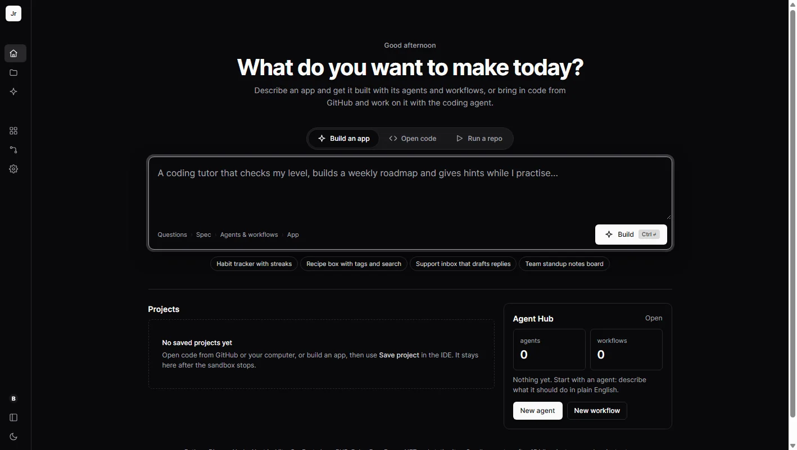
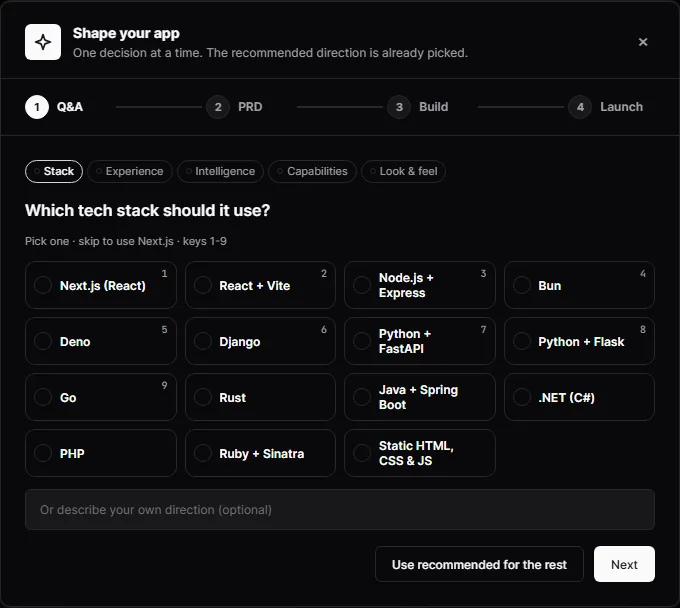
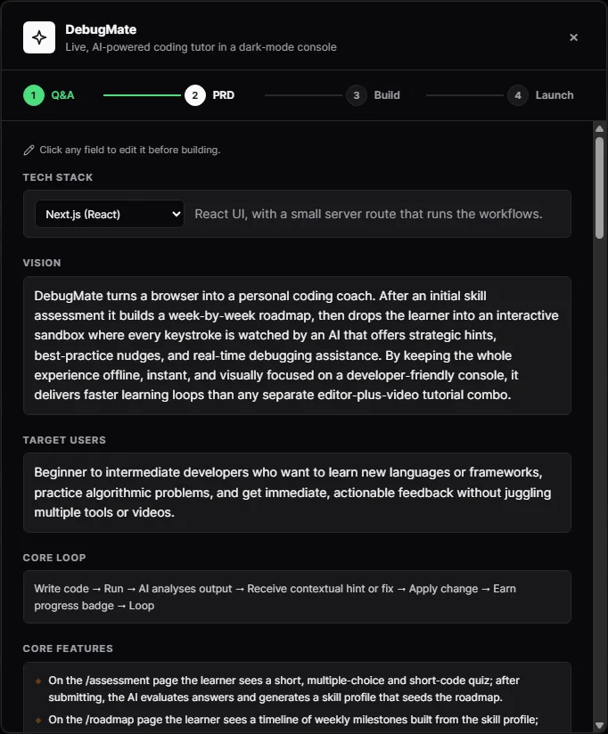
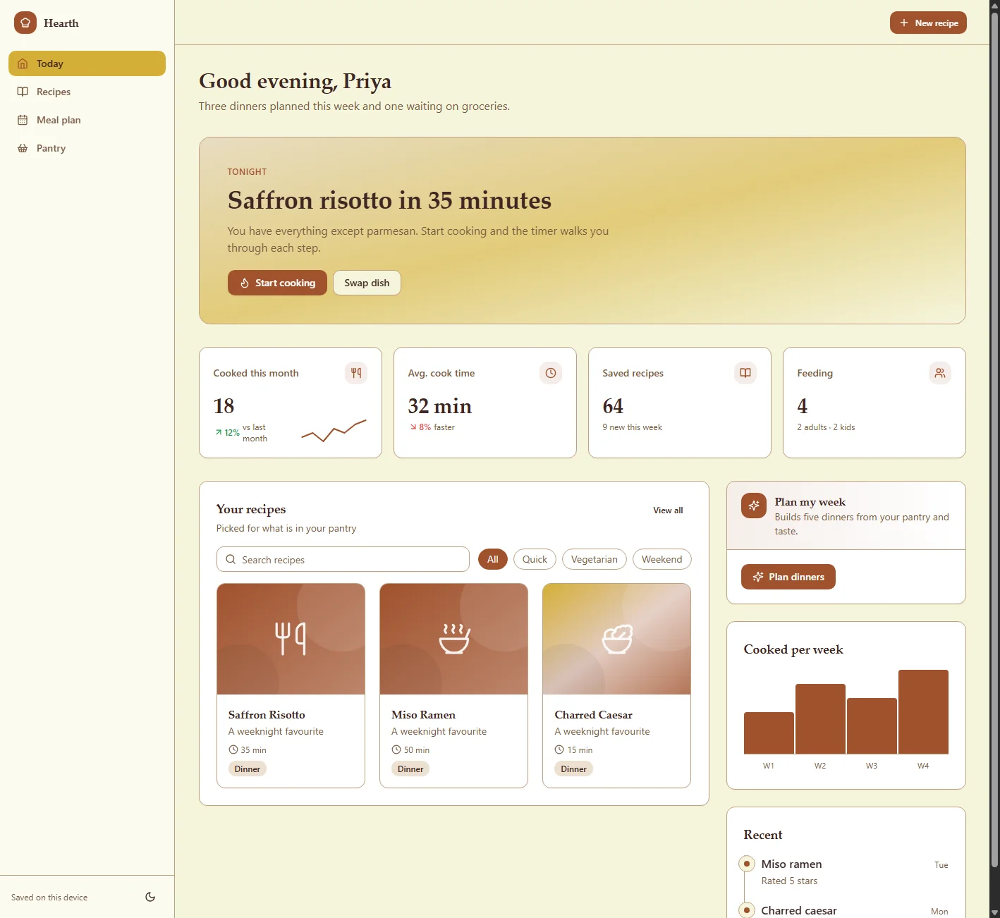

Sandboxes
One container per project
CPU, memory and process limits, no extra privileges, only the project folder mounted.
Monarch
One place for everyone who wants to make software. Describe an idea in plain words and get the app, its AI agents and the workflows that connect them. Or bring your own GitHub repo and keep building it with a team of coding agents.

The idea
If you don't code
Describe what you want in everyday words. Monarch asks a few design questions, writes a spec you can edit, builds the AI agents and workflows the app needs, then builds the app and puts it online.
If you do code
Open any of your GitHub repos in a sandboxed IDE with a terminal and live preview. Plan a change, let coding agents carry it out under guardrails you set, and push it back as a branch or pull request.
Groq, OpenAI, Anthropic or Gemini. Paste a key and it is recognised.
Everything lands in your GitHub as a normal repo with a README.
Every project runs in its own container with limits.
Secrets stay on the server; the AI proposes, the server decides.
Build mode · no code needed
A one-line prompt becomes a full app in four visible steps, and you can change anything before the build starts.

Design decisions, not a form. Each question comes as a few choices with a recommended answer already picked.

A spec you can edit. Vision, users, the core loop, features page by page, data and design direction.
The difference
Then the app, designed for you
A design pass picks the layout, palette and type for each app. Pages are generated in parallel, type-checked and repaired, and the app opens in a live preview. These came from one-line prompts:

Agent Hub
Workflows
New · APIs
The IDE · for developers
Coding agents
GitHub
Under the hood
Sandboxes
CPU, memory and process limits, no extra privileges, only the project folder mounted.
Server
UI and templates embedded, with a Node service beside it for agents, the Hub and workflows.
Data
Users, projects, agents, workflows and runs. Secrets encrypted; API tokens kept only as hashes.
Identity
GitHub, Google or a beta code. Who you are comes from your session, never from the page.
Files
Every read and write goes through a guarded root that refuses path escapes and symlinks.
Tested
170+ automated tests, with negative ones: other users' ids, path escapes and hostile repos.
Live demo
The platform runs on my laptop and is shared through Tailscale Funnel, so it is online while the laptop is open. Sign in with Google, GitHub or the beta code.
How this works. Opening Monarch also sends me a notification on my phone, so if the laptop is asleep I can switch the tunnel on. If the page doesn't load yet, give it a few minutes and try again.